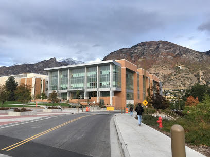

The conference will be LIVE at BYU this year (a Zoom option will be available).
COVID Requirements for the Conference Site
6th Annual conference: Thursday,
April 7, 2022
Registration deadline: March 27, 2022.
Abstract
Post-deadline abstracts are no longer being accepted for 2022.
Conference Schedule
You can download the 2022 Conference Flyer.
Frequently Asked Questions
Q: Where do I park?
A1: Location of free visitor parking lot located closest to Air
Quality Conference (Engineering Building) at BYU. 40°14'53.9"N
111°38'39.1"W 40.248297, -111.644195
A2: Location of free visitor parking lot located farthest away from Air Quality Conference (Engineering Building) at BYU. 40°15'08.1"N 111°38'54.0"W 40.252260, -111.648345
Q: How do I get there?
A: Since this is an air quality conference, we'd love for you to
take mass transit. Take the FrontRunner to Provo Station then take
either bus 831 or Trax UVX.
The detials fo Trax light rail: Board at Provo Station then disembark 6 stations later at the "BYU South Campus Station." From there it is about a 2 minute walk to the Engineering Building.
Directions and Maps
From locations north of Provo:
- Take I-15 south to Exit 269; exit I-15 to go east on University Parkway.
- Keep left at the fork and go east on University Parkway.
- Follow University Parkway East for about 4 miles, through multiple traffic signals. At University Parkway and Canyon Road, you will see LaVell Edwards Stadium on the Northeast corner.
- Continue about 1 mile straight on University Parkway past the stadium, up the hill to the traffic signal at 900 East. Turn right (south) onto 900 East.
- Drive south to the second traffic signal; turn right (west) onto Campus Lane (1100 N).
- Take the first left (south) to get to the visitor parking lot located closest to the conference site.
From locations south of Provo:
- Take I-15 north to Exit 263 University Avenue.
- Continue north on University Avenue about 2 miles to Provo Center Street.
- Turn right (east) onto Center Street; continue straight through the traffic circle (roundabout).
- Turn left (north) onto 900 East, continue north about one mile to Campus Lane (1100 N).
- Turn left (west) onto Campus Lane. Take the first left to get to the visitor parking lot located closest to the conference site.
From the Parking Lot to the Engineering Department:
- Follow directions on map below to reach west entrance of the new Engineering Building (it is directly south of the Clyde Building).
- Enter west doors (2nd floor) and you will see the Registration desk for the conference.
Brigham Young University map: https://map.byu.edu/
Look for the EB building.
Engineering Building: 
The conference will be held in BYU's beautiful new Engineering Building.
Q: What's up for lunch?
A: Everyone who registers will get a box lunch to enjoy while
looking at the posters. We will have a mix of lunch types, including
vegetarian. Please try to be flexible
with your choice of meals as we are just guessing at the selection
quantity breakdowns.
Q: Will there be coffee????
A: YES!! We have coordinated with BYU and an outside caterer to
provide coffee and tea with the snacks at the breaks.
Related resources
- Driving Directions for the Conference: Map
- Utah Division of Air Quality